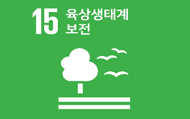

4.기업의 사회적가치 추구
사회적 목적
사회복지법인 유은복지재단 산하 장애인직업재활시설 나눔공동체는 경상북도에서 최초로 "장애인직업재활시설" 을 운영하고 있는 곳으로서, 기독교 정신에 입각하여 사회복지사업법 및 장애인복지법에규정한 장애인의 직업재활사업을 수행하고, 장애인들이 정부와 사회로부터 일방적인 시혜의 대상이 아니라‘경제적으로 자립하여 국민의 소중한 의무인 세금을 내며 살아가는 사회인' 으로 떳떳하게 살아갈 수 있는 자활 ·자립의 기반 마련과 복지증진에 기여함을 목적으로 친환경농산물인 새싹채소(Sprouts), 어린잎채소(Baby Leaf)국산콩나물(Bean Sprouts) 재배사업을 시행하고 있습니다. 이를 통해 장애인 직업재활의 선도적인 역할을담당하고 있으며 안정적이고 체계적인 생산시스템 구축으로 사회적 취약계층에게 사회적 일자리 제공을 통한경제적 자립과 삶의 질 향상 및 사회통합을 이루고자 합니다.
외부공표
홈페이지 및 게시판
5.지속가능발전(SDGs) 기여

본 사회적경제기업은 국가 지속가능발전목표(K-SDGs) 중
Goal 15. 육상생태계 보전 에 기여하고 있습니다.
Goal 15. 육상생태계 보전 에 기여하고 있습니다.
※ SDGs(Sustainable Development Goals)란, UN에서 지속가능발전을 실현하기 위해 설정한 목표를 의미하며,
해당 지표는 아래 17개 목표 중 기업의 소셜미션 및 사업활동과 가장 연관성이 높은 목표를 제시하고 있습니다.
해당 지표는 아래 17개 목표 중 기업의 소셜미션 및 사업활동과 가장 연관성이 높은 목표를 제시하고 있습니다.
1. 빈곤감소 및 사회안전망 강화
2. 식량안보 및 지속가능한 농업강화
3. 건강하고 행복한 삶 보장
4. 교육의 증진
5. 성평등 보장
6. 건강하고 안전한 물관리
7. 에너지의 친환경적 생산과 소비
8. 좋은 일자리 확대와 경제성장
9. 사회기반시설구축, R&D확대 등
10. 불평등 해소
11. 포용적·안전한·회복력있는 도시
12. 지속가능한 소비·생산증진
13. 기후변화 대응
14. 해양생태계 조성
15. 육상생태계 보전
16. 평화, 정의 포용
17. 지구촌 협력강화
※ 가치지향성은 SVI지표를 9개 영역으로 재분류한 지표로 영역별 달성률을 통해 기업의 가치지향특성을 파악할 수 있습니다. 또한 기업이 중점관리하고자 하는 영역의 구성지표를 확인하고 세부지표 관리를 통해 사회적가치 측정결과 개선에 활용하실 수 있습니다.